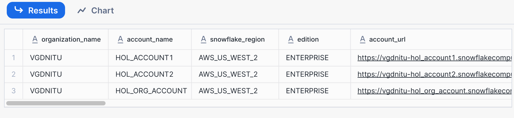
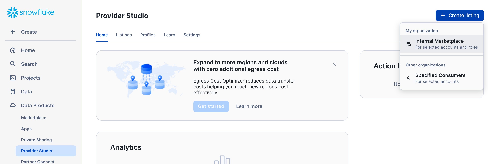
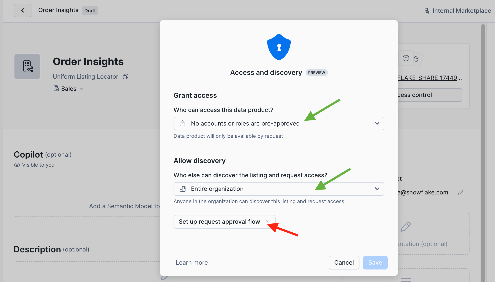
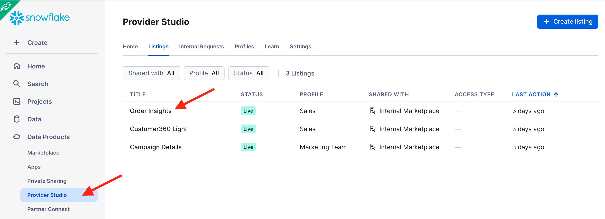
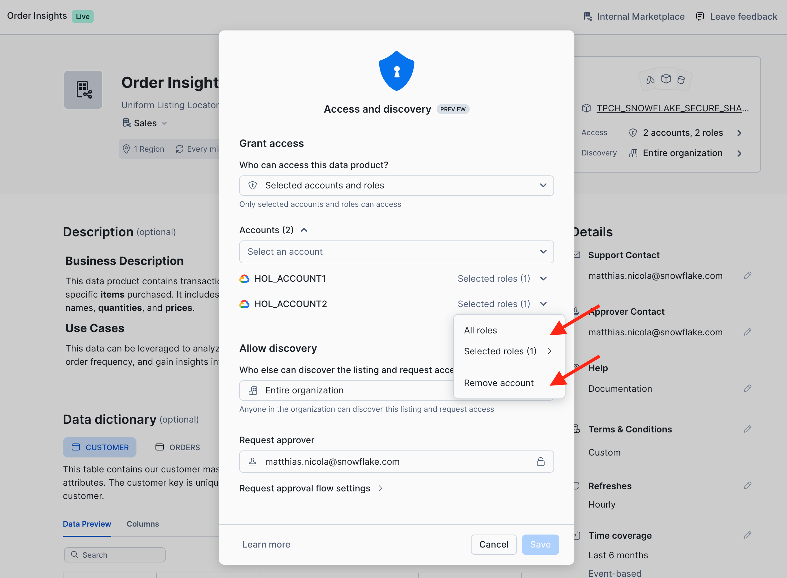

Sharing information between departments or business units ("domains") of a company is critical for success. Sharing and consuming data assets is more successful if data is shared as a product. A data product is a collection of related data objects plus metadata, such as a business description, ownership and contact information, service level objectives, data dictionary, and more. In a Data Mesh, data products are typically also subject to various data management and organizational principles.
Snowflake Internal Marketplace enables companies to publish documented and governed data products, so they are discoverable and understandable for data consumers. Optionally, data quality metrics and SLOs can be included to make the product more trustworthy. The marketplace also offers rich capabilities to manage access to data products and wrap detailed governance around them to control which consumers can use which data products or which parts of a data product.

What You'll Learn
- How to publish, share, discover, and consume data product with the Snowflake Internal Marketplace
- How to setup profiles for different business units that own the data products
- How to manage access to data products, including request & approval workflows
- How to configure governance polices for fine-grained access control of data products across business units
What You'll Need
- Basic knowledge of SQL, Database Concepts
- A Snowflake Trial Account. Signup link can be found in next section (Setup)
- Familiarity with using SQL in Snowsight Worksheets
What You'll Build
- Data products based on simple TPC-H data
- Organizational Listings comprised of data and metadata
- Governance policies to manage your data products
The setup instructions for this lab describe all the steps for you to create the 3 accounts, domain profiles, and roles shown in the diagram below.
The internal marketplace exists by default. It does not need to be created. But, you will configure it with provider profiles for the different business units via the organization account. The organization account is a recent Snowflake capability to optionally monitor and manage a set of regular accounts.

The setup follows these steps:
- Step 1: Create a Snowflake trial account in a region of your choice
- Step 2: Configure the first account and create two more accounts in the same org
- Step 3: Configure the second account
- Step 4: Configure the organization account, and rename the first account
- Step 5: Create profiles for the Sales, Marketing, and Supply Chain domains
- Step 6: Setup of a TPC-H sample database
- Step 7: Pre-populate the Internal Marketplace with Sample Listings
For Steps 2 through 7 you can download scripts here and execute them in different accounts as per the instructions below. In the Snowflake UI you can easily import these scripts like this:

Step 1: Create a Snowflake trial account
Sign up for a trial account here
- Choose a Cloud and Region. We recommend choosing one of these regions where this Quickstart and the very latest features have been tested:
- Microsoft Azure: North Europe (Ireland), Central US (Iowa), Canada Central (Toronto)
- Amazon Web Services: EU (Frankfurt), Canada (Central), Asia Pacific (Tokyo)
- Google Cloud Platform: Europe West (London), US Central (Iowa)
- Choose Enterprise Edition or higher. (Standard Edition does not support the Internal Marketplace)
- Activate the account with an admin user name such as
admin- Note! Step 2 creates a
sales_adminthat will be used throughout this lab.
- Note! Step 2 creates a
Step 2: Configure the first account and create two more accounts in the same org
- Login as
adminto your Primary Account from Step 1 and execute the following commands in a worksheet. - In the first four commands, enter your own email, first name, last name and password - this variable will be reused in the code for creating users and accounts.
- You can also download this SQL file and import it into Snowsight -
STEP2_setup_primary_account.sql
-- Run this code in your PRIMARY Account
-- Make sure you update the four variables below (email_var, firstname_var, lastname_var, and pwd_var)
USE ROLE accountadmin;
-- Use the same name and email for all accounts
set email_var = 'FILL_IN_YOUR_EMAIL';
set firstname_var = 'FILL_IN_YOUR_FIRST_NAME';
set lastname_var = 'FILL_IN_YOUR_LAST_NAME';
-- Use the same password for users in all accounts
set pwd_var = 'FILL_IN_YOUR_PASSWORD';
CREATE OR REPLACE WAREHOUSE compute_wh WAREHOUSE_SIZE=xsmall INITIALLY_SUSPENDED=TRUE;
GRANT ALL ON WAREHOUSE compute_wh TO ROLE public;
-- Create a user and role for the sales domain:
USE ROLE accountadmin;
CREATE OR REPLACE ROLE sales_data_scientist_role;
SET my_user_var = CURRENT_USER();
ALTER USER identifier($my_user_var) SET DEFAULT_ROLE = sales_data_scientist_role;
CREATE OR REPLACE USER sales_admin
PASSWORD = $pwd_var
LOGIN_NAME = sales_admin
DISPLAY_NAME = sales_admin
FIRST_NAME = $firstname_var
LAST_NAME = $lastname_var
EMAIL = $email_var
MUST_CHANGE_PASSWORD = FALSE
DEFAULT_WAREHOUSE = compute_wh
DEFAULT_ROLE = sales_data_scientist_role
COMMENT = 'Sales domain admin';
GRANT ROLE sales_data_scientist_role TO USER sales_admin;
GRANT ROLE accountadmin TO USER sales_admin; -- for simplicity in this lab
GRANT CREATE SHARE ON ACCOUNT TO ROLE sales_data_scientist_role;
GRANT CREATE ORGANIZATION LISTING ON ACCOUNT TO ROLE sales_data_scientist_role;
-- Next, create a user and role for the marketing domain:
USE ROLE accountadmin;
CREATE OR REPLACE ROLE marketing_analyst_role;
CREATE OR REPLACE USER marketing_admin
PASSWORD = $pwd_var
LOGIN_NAME = marketing_admin
DISPLAY_NAME = marketing_admin
FIRST_NAME = $firstname_var
LAST_NAME = $lastname_var
EMAIL = $email_var
MUST_CHANGE_PASSWORD = FALSE
DEFAULT_WAREHOUSE = compute_wh
DEFAULT_ROLE = marketing_analyst_role
COMMENT = 'Marketing domain admin';
GRANT ROLE marketing_analyst_role TO USER marketing_admin;
GRANT CREATE SHARE ON ACCOUNT TO ROLE marketing_analyst_role;
GRANT CREATE ORGANIZATION LISTING ON ACCOUNT TO ROLE marketing_analyst_role;
USE ROLE orgadmin;
GRANT MANAGE LISTING AUTO FULFILLMENT ON ACCOUNT TO ROLE sales_data_scientist_role;
GRANT MANAGE LISTING AUTO FULFILLMENT ON ACCOUNT TO ROLE marketing_analyst_role;
While waiting for the email, you can go ahead and run the following parts.
Now, run the following commands to create the next two accounts that you need.
-- Run this code in your PRIMARY account
-- Create a secondary account in the same region (default!):
USE ROLE orgadmin;
CREATE ACCOUNT hol_account2
admin_name = supply_chain_admin
admin_password = $pwd_var
first_name = $firstname_var
last_name = $lastname_var
email = $email_var
must_change_password = false
edition = enterprise;
-- Create an organization account for admin purposes:
CREATE ORGANIZATION ACCOUNT hol_org_account
admin_name = org_admin
admin_password = $pwd_var
first_name = $firstname_var
last_name = $lastname_var
email = $email_var
must_change_password = false
edition = enterprise;
-- Get an overview of all the accounts in the organization.
-- This SHOW command should return 3 rows:
SHOW ACCOUNTS;
- Make a note of your account names, URLs, and passwords!
- Copy or bookmark the account URLs returned by `SHOW ACCOUNTS'.
- When you click on one of these URLs you are automatically directed to the respective account for login.
Step 3: Configure the second account HOL_ACCOUNT2
In a separate browser tab, log in to the account you created in step 1 (HOL_ACCOUNT2) and set up this account.
- Login as
supply_chain_adminuser to your accountHOL_ACCOUNT2from Step 2 and execute the following commands in a worksheet (Use the code below or download it from the fileSTEP3(HOL_ACCOUNT2)_setup_hol_account2.sql)
-- Run this in hol_account2, logged in as supply_chain_admin user
-- Make sure you run this as ACCOUNTADMIN
USE ROLE accountadmin;
CREATE OR REPLACE WAREHOUSE compute_wh WAREHOUSE_SIZE=xsmall INITIALLY_SUSPENDED=TRUE;
GRANT ALL ON WAREHOUSE compute_wh TO ROLE public;
CREATE ROLE supply_chain_admin_role;
GRANT ROLE accountadmin TO ROLE supply_chain_admin_role; -- for simplicity in this lab
GRANT ROLE supply_chain_admin_role TO USER supply_chain_admin;
ALTER USER supply_chain_admin
SET DEFAULT_ROLE = supply_chain_admin_role;
USE ROLE supply_chain_admin_role;
CREATE DATABASE supply_chain_db;
Step 4: Configure the organization account and rename your primary account
Login to the Organization Account HOL_ORG_ACCOUNT as the org_admin user and execute the following commands in a worksheet.
You can also download code below from the file STEP4(HOL_ORG_ACCOUNT)_configure_org_account.sql from the repository:
-- Login to the Organization Account HOL_ORG_ACCOUNT and execute the following commands in a worksheet.
USE ROLE accountadmin;
CREATE OR REPLACE WAREHOUSE compute_wh WAREHOUSE_SIZE=xsmall INITIALLY_SUSPENDED=TRUE;
GRANT ALL ON WAREHOUSE compute_wh TO ROLE public;
-- Rename the Primary Account:
USE ROLE globalorgadmin;
-- execute the following two commands together,
-- no other commands in between:
show accounts;
SET my_curr_account = (SELECT "account_name" FROM TABLE(RESULT_SCAN(LAST_QUERY_ID())) order by "created_on" ASC LIMIT 1);
-- View and rename the account:
SELECT $my_curr_account;
ALTER ACCOUNT identifier($my_curr_account)
RENAME TO hol_account1 SAVE_OLD_URL = true;
-- Enable users with the ACCOUNTADMIN role to set up Cross-Cloud Auto-Fulfillment
SELECT SYSTEM$ENABLE_GLOBAL_DATA_SHARING_FOR_ACCOUNT('hol_account1');
SELECT SYSTEM$ENABLE_GLOBAL_DATA_SHARING_FOR_ACCOUNT('hol_account2');
SHOW ACCOUNTS;
-- You should see 3 rows similar to the image below.
-- Make a note of your account names, URLs, and passwords!

Step 5: Create profiles for the Sales, Marketing, and Supply Chain domains
Continue working as the org_admin user in your Organization Account HOL_ORG_ACCOUNT to create data provider profiles. You will set up profiles for 3 business domains: Sales, Marketing, and Supply chain.
- Download the script
STEP5(HOL_ORG_ACCOUNT)_create_org_profiles.sql - In that script, replace the dummy email youremail@whatever.com with your actual email address so that you receive access request notifications for your data product. See the image below for more details.
- Don't worry: it's only a couple of emails and only during this lab.
- Run the downloaded script
STEP5(HOL_ORG_ACCOUNT)_create_org_profiles.sqlin a worksheet.

Step 6: Setup of a TPC-H sample database
- Download the script
STEP6(HOL_ACCOUNT1)_create_lab_database.sql - Login to your primary account
HOL_ACCOUNT1as thesales_adminuser and run the downloaded scriptSTEP6(HOL_ACCOUNT1)_create_lab_database.sqlscript in a worksheet
Step 7: Pre-populate the Internal Marketplace with Sample Listings
- Download the script
STEP7a(HOL_ACCOUNT1)_create_sample_listing.sql- Login into
hol_account1asmarketing_adminand run the script STEP7a.
- Login into
- Download the script
STEP7b(HOL_ACCOUNT2)_create_sample_listing.sql- Login into
hol_account2assupply_chain_adminand run the script STEP7b.
- Login into
Setup is now complete!
In this section you will work in HOL_ACCOUNT1 to create and publish an organizational listing.
The publishing flow consists of 5 steps:
- Listing Title and Ownership
- Selecting Data Objects to Share
- Configure Access Control and the Approval Process
- Add Optional Metadata and SLOs
- Publish your listing to the internal marketplace
Login in to HOL_ACCOUNT1 as user sales_admin.
Publishing Flow (Step 1 of 5): Listing Title and Ownership
- Navigate to the Provider Studio and click the blue +Create Listing button in the top right.
- Select "Internal Marketplace".

- Click on "Untitled Listing" and give your data product a meaningful title. Let's use Order Insights in this lab. Click "Save".

- Click on the +Profile button and select the Sales profile as the owner of this data product.

- When you save the profile selection, note that the contact email from the Sales profile is automatically entered as the default support contact for this listing. You can change this on a per listing basis if you want.
Publishing Flow Step (2 of 5): Selecting Data Objects to Share
Now let's select the data objects that we want to share in this data product.
- Click on the blue Add Data Product button to open the object explorer.
- Then, click + Select, navigate to the SF1 schema of the TPCH database, and select all tables except Region and Part. Also select the ORDER_SUMMARY view and the function ORDERS_PER_CUSTOMER. Click Done and Save.

Publishing Flow (Step 3 of 5): Configure Access Control and the Approval Process
Next you set the access control for the data product. Click on the gray +Access Control button.
- Discovery determines who can see the listing and all its metadata in the internal marketplace without having access to the shared data objects.
- Access specifies who can discover the listing and access the shared data objects.
For this first data product we keep it simple and stick with the defaults:
- Grant Access: No accounts or roles are pre-approved
- Allow Discovery: Entire Organization
As a result, every data consumer will need to request access to obtain approval to use the data product. Click on Set up request approval flow to proceed.

You could configure an external workflow engine for the request approval process. But for this lab we choose to Manage requests in Snowflake. The email address for notifications defaults to the one from the Sales profile but could be changed.

After you confirm the approval flow settings, Snowflake prompts you for one more configuration. Here is why: this listing is configured to be discoverable by the entire organization. What if you add another account to the organization but in a different cloud region? Then Snowflake would transparently perform incremental replication to that region to minimize egress cost. As the data provider you can choose the frequency of this replication.
So lets (1) Review the settings, (2) Change the replication interval to daily (1 Days), and then (3) Save the settings for this listing:

Publishing Flow (Step 4 of 5): Add Optional Metadata and SLOs
Data products should be understandable and trustworthy for data consumers so let's add additional metadata to describe the product (see screenshot below).
- Add a business description to document your listing.
- For example: "This data product contains transactional records of customer orders, linking individual order details with specific items purchased. It includes information such as order IDs, customer identifiers, order dates, item names, quantities, and prices. This data can be leveraged to analyze customer purchasing patterns, identify popular products, understand order frequency, and gain insights into sales trends."
- Add documentation by providing a URL to additional information. (You can enter any URL for now, such as http://www.snowflake.com/data-mesh)
- Add terms & conditions by providing a URL to where the T&Cs can be found.
- Add attributes that indicate service level objectives from the data product owner to data consumers. You can specify:
- Update Frequency: How often you will refresh the data product, e.g. adding new or updated records to the shared tables.
- Geographic Coverage: The regions you will share this data product to, if your company uses Snowflake in multiple regions.
- Time Range: Amount of history data included.
- Timestamp Granularity: The interval between data points. For example, "Event-based" if there is one record for each incoming order, or "Daily" if order volumes are aggregated by date, and so on.
- Add at least two Usage examples such as the following two queries.
- Note: Queries reference objects in a data product via the Uniform Listing Locator (ULL).
- The ULL of your Order Insights listing is
ORGDATACLOUD$SALES$ORDER_INSIGHTS. - The ULL contains the domain profile name and listing name. Schema name and object name can be appended to reference objects within the listing, as in the two queries below.
- The ULL can be copied from the top of the listing page, right under the listing name.
-- Title: Explore the Order Summary View: SELECT * FROM ORGDATACLOUD$SALES$ORDER_INSIGHTS.SF1.ORDER_SUMMARY LIMIT 100; -- Title: Use the UDF to obtain order details for one customer: SELECT customer_name, country, orderkey, orderdate, AMOUNT FROM TABLE(ORGDATACLOUD$SALES$ORDER_INSIGHTS.sf1.orders_per_customer(60001)); - Generate a Data dictionary. Snowflake will automatically compile column information and sample data for all objects in the data product.Select at least one (and up to 5) data objects and click +Add to Featured. These are the objects that consumers will see first in the dictionary. Suggestion: Select
customer,orders, andorder_summaryto be featured.

Publishing Flow (Step 5 of 5): Publish your listing to the internal marketplace
Click the blue Publish button in the top right corner.
Your data product is now live! You can see it when you navigate to the Internal Marketplace.
- In the old UI, choose Data Products in the menu on the left, then Marketplace, then Internal Marketplace at the top.
- In the new UI, choose Catalog in the menu on the left, then Internal Marketplace (see below).
- Use the Provider filter to show listings for specific domains only.

In this section you will request access to the new data product for the Marketing domain and the Supply chain domain.
Request Access
- Open a new browser tab and log in to the
HOL_ACCOUNT1a s themarketing_adminuser. - Navigate to the Internal Marketplace
- Click on the Order Insights listing
- Review all the listing elements from the data consumer point of view
- Click on the blue Request Access button
- If you haven't previously validated your email of the
marketing_adminuser, Snowflake will now prompt you to do so, and you can follow the dialog to resend the verification email.
- If you haven't previously validated your email of the
- The Request access dialog comes up. Enter a business justification such as "We need access to this data for our next marketing campaign." Then submit the request.
- After submitting the access request click the grey View request button to review or even withdraw your request.
- If you withdraw the request, please submit it again.

Now let's also request access for the Supply chain team.
- In a separate browser tab log into
HOL_ACCOUNT2as thesupply_chain_adminuser. - Navigate to the Internal Marketplace, open the Order Insights listing, and Request Access
- Specify a reason for access such as "We want to analyze order patterns to optimize our supply chain operations."
Review and Grant Access
Let's switch back to the perspective of the data product owner to review and grant the access requests.
- Log into your account
HOL_ACCOUNT1as thesales_adminuser. - Navigate to the Provider Studio as shown in the screenshot below and open the tab Internal Requests.
- Click on each of the two requests to review the details and use the green Grant button to approve.

Switch from Needs Review to Resolved Requests to see the history of requests.

Now that access has been granted, let's go back to the consumer roles:
- In a separate browser tab log into
HOL_ACCOUNT2as thesupply_chain_adminuser. (Keep this tab alive for the rest of the lab.) - In the Internal Marketplace open the Order Insights listing again
- The blue Request Access button has now changed to Query in Worksheet. Reload the browser tab if needed to see the new button.
- Click Query in Worksheet. Review and run the data product sample queries. (Keep this tab alive for the rest of the lab.)
- Note the list of all available internal data products in the left-hand side of the UI.
- In the SQL, note the ULL (Uniform Listing Locator) that references the data product.
- The ULL contains the domain name, i.e. the name of the profile under which the listing was published.
- The ULL also contains the listing name.
- Schema and object names are appended to access specific objects in the data product.
- Optional: Log into account
HOL_ACCOUNT1as themarketing_adminuser and perform the same steps.

What happens when the data owner decides to update the data product?
- Switch back to the data provider side, ie.
sales_adminuser inHOL_ACCOUNT1 - Review the order details for customer 60001.
use schema tpch.sf1; use role sales_data_scientist_role; SELECT customer_name, country, orderkey, orderdate, AMOUNT FROM TABLE(orders_per_customer(60001)); - Note that customer 60001 lives in Kenya. But, the customer has now moved to Mozambique, which requires the following update to the customer's nationkey:
-- Customer 60001 moves from Kenya to Mozambique ! UPDATE customer SET c_nationkey = 16 WHERE c_custkey = 60001; - Now switch to your browser tab where you are logged into
HOL_ACCOUNT2assupply_chain_admin. In the worksheet "Order Insights - Examples" run the second sample query again:-- Use the UDF to obtain the order details for one customer SELECT customer_name, country, orderkey, orderdate, AMOUNT FROM TABLE(ORGDATACLOUD$SALES$ORDER_INSIGHTS.sf1.orders_per_customer(60001)); - Note that the updated country information, inferred from the updated nationkey, is instantly visible to data consumers!
- Other data product changes such as adding a column to a table would also be immediately reflected on the consumer side.
- Best practice: inform your data consumers of structural data product changes ahead of time. In case of a breaking change consider creating a new listing "v2.0" and give data consumers time to migrate from the old to the new listing.
Let's examine some simple techniques for row- and column-level access control across domains.
- Switch back to the data provider side, ie.
sales_adminuser inHOL_ACCOUNT1 - Review the order summary view. Note that it returns data for customers in many different countries:
use schema tpch.sf1; use role sales_data_scientist_role; SELECT * FROM order_summary LIMIT 100;
Row-level Access Control across Domains
The data steward of the Sales domain has requested the following access restrictions:
- ❗The marketing team may only see data for customers in Canada.
- ❗The supply chain team may only see data for customers in the US.
Implement the following policy to make your data product compliant:
use schema tpch.sf1;
use role sales_data_scientist_role;
CREATE OR REPLACE ROW ACCESS POLICY country_filter AS (country INTEGER)
RETURNS boolean ->
CASE
WHEN current_account_name() = 'HOL_ACCOUNT1'
AND current_role() = 'SALES_DATA_SCIENTIST_ROLE'
THEN true
WHEN current_account_name() = 'HOL_ACCOUNT1'
AND current_role() = 'MARKETING_ANALYST_ROLE'
AND country = 3 /* Canada */
THEN true
WHEN current_account_name() = 'HOL_ACCOUNT2'
AND country = 24 /* USA */
THEN true
ELSE false
END;
ALTER TABLE nation ADD ROW ACCESS POLICY country_filter ON (n_nationkey);
Before we review the impact of this policy on the data consumers, let's look at a different governance requirement that requires column masking.
Data Masking across Domains
The data steward of the Sales domain has requested the following data masking to be enforced:
- ❗The marketing and supply chain teams are not allowed to see order pricing or item pricing for orders placed before 1996.
Implement the following policy to make your data product compliant:
CREATE OR REPLACE MASKING POLICY order_mask AS (value INT, cutoff_date DATE) RETURNS INT ->
CASE
WHEN current_account_name() = 'HOL_ACCOUNT1'
AND current_role() = 'SALES_DATA_SCIENTIST_ROLE'
THEN value
WHEN current_account_name() = 'HOL_ACCOUNT1'
AND current_role() = 'MARKETING_ANALYST_ROLE'
AND cutoff_date >= '1996-01-01'
THEN value
WHEN current_account_name() = 'HOL_ACCOUNT2'
AND cutoff_date >= '1996-01-01'
THEN value
ELSE null
END;
ALTER VIEW order_summary ALTER COLUMN order_amount
SET MASKING POLICY order_mask USING (order_amount, o_orderdate);
ALTER TABLE orders ALTER COLUMN o_totalprice
SET MASKING POLICY order_mask USING (o_totalprice, o_orderdate);
ALTER TABLE lineitem ALTER COLUMN l_extendedprice
SET MASKING POLICY order_mask USING (l_extendedprice, l_commitdate);
Effect of the Policies on Data Consumers
Let's see how the Supply Chain and Marketing teams are affected by the new policies.
- Switch to your browser tab where you are logged into
HOL_ACCOUNT2assupply_chain_admin. - In the worksheet "Order Insights - Examples" run the first sample query again:
SELECT * FROM ORGDATACLOUD$SALES$ORDER_INSIGHTS.SF1.ORDER_SUMMARY LIMIT 100; - Confirm that governance policies are applied:
- You should only see data where the nation name is United States.
- The Order_Amount column should be masked for orders before 1996.
- Log into account
HOL_ACCOUNT1as themarketing_adminuser and execute the same query.- You should see data for Canadian customers only.
- The Order_Amount column should be masked for orders before 1996.
As soon as you remove roles or accounts, the listing is no longer accessible for this role and/or account.
In this section we will review further capabilities for managing and monitoring listings as a data product owner or as an organization data steward:
- How to change/revoke access or discoverability for a listing
- How to grant listing management privileges
- How to audit access to organizational listing (organization_usage.access_history)
Change/Revoke Access or Discoverability for a Listing
- Log into account
HOL_ACCOUNT1as thesales_adminuser - Navigate to the Provider Studio and open the Order Insights listing
- In the top right, click on the Access definition of the listing.

- You can now add or remove roles or entire accounts that access the data product. Same for discoverability.
How to Grant Listing Management Privileges
- Navigate to the Provider Studio and open the Order Insights listing, if it is not still open from the previous exercise.
- Click on the three dots and Open Settings in the top right corner.
- In the side panel you can now edit listing settings and privileges.
- For example, you can authorize additional roles to Modify this listing and respond to access requests from data consumers:

How to Audit Access to Organizational Listing
As an organization admin you can query the organization_usage.access_history view to audit the access to all data products on the internal marketplace.
- Login to your Organization Account
HOL_ORG_ACCOUNTand run the following query to obtain a list of all queries against the ORDER_INSIGHTS data product including the user, role, timestamp, and SQL text of the access as well as the set of provider policies that have governed the access at that point in time. - Note: There is some delay in updating the organization_usage.access_history. If you don't see the entries that you expect, check back again later!
- You can come back to this lab for as long as your trial accounts are active!
use role globalorgadmin;
use warehouse compute_wh;
select q.account_name,
q.user_name,
q.role_name,
q.query_text,
q.start_time,
q.end_time,
a.direct_objects_accessed,
a.provider_base_objects_accessed,
a.provider_policies_referenced
from SNOWFLAKE.ORGANIZATION_USAGE.ACCESS_HISTORY a,
SNOWFLAKE.ORGANIZATION_USAGE.QUERY_HISTORY q
where a.query_id = q.query_id
and q.query_text ilike '%ORDER_INSIGHTS%'
order by query_start_time desc;
So far this lab has managed listings mainly through the Snowflake UI. But, data owners and data consumers can also work with listings programmatically through the Listing API.
In this section we point you to some of the most commonly used commands. These are not end-to-end exercises to create or alter listings, but we encourage you to experiment with some of these commands.
As a Listing Owner
- Run
SHOW LISTINGS;to list the listings that you own or have permission to manage. - Run
DESCRIBE LISTING listing-name;to obtain additional details for one specific listing.- The listing name can be obtained from the output of
SHOW LISTINGS;; - Note: If that listing name contains special characters other than the underscore, then the name must be in double quotes and is case-sensitive.
- The listing name can be obtained from the output of
- In the result of
DESCRIBE LISTINGscroll to the right to the column MANIFEST_YAML and copy its column value to a worksheets.- This YAML file is a complete representation of the listing and enables programmatic management of listings.
- Run
CREATE ORGANIZATION LISTINGwith a YAML file and SHARE name to create a new listing programmatically. - Run
ALTER LISTINGto make changes to a listing such as:- Unpublish and publish a listing
- Rename a listing
- Change any of the listing metadata by using a modified YAML file in the
ALTER LISTINGcommand - Change who can discover or access a listing, e.g. by providing a modified YAML file
As a Listing Consumer
- Run
SHOW AVAILABLE LISTINGS IS_ORGANIZATION = TRUE;to list all the internal marketplace listings that your current role is allowed to discover. - Run
DESCRIBE AVAILABLE LISTING listing_global_nameto get more details on one particular listing.- The listing global name can be found in the output of the
SHOW AVAILABLE LISTINGScommand. - Note: The
listing global nameis a different kind of listing identifier than thelisting name.
- The listing global name can be found in the output of the
- Run
CREATE DATABASE name FROM LISTING listing_global_name;if you operate as a data consumer in a different account and you want to mount the listing as a local database.- This does not create a local copy of the shared data but it makes the listing appear in your local list of databases.
- Mounting an organizational listing as a local database enables you to work with database roles for additional governance options.
Congratulations, you completed this Snowflake Internal Marketplace journey! You have seen how data products can be authored, published, requested, consumed, and governed. These are key capabilities for sharing documented and understandable data products across business units with governance and compliance control controls.
What you Learned
- How to create data products that consist of multiple data objects.
- How to document a data product with a broad range of metadata such as description, data dictionary, ownership, sample queries, and service-level objectives.
- How to use provider profiles that represent different domains or business units as owners of data products on the internal marketplace.
- How to request and approve or deny access to data products
- How to apply data product governance controls across domains
Related Resources
- Lab Source Code on Github
- Organization Accounts
- Organization Profiles
- Organizational Listings
- Managing Listings via API
- White Paper: How to Knit Your Data Mesh on Snowflake (March 2025)
- Webinar Recording with a demo of the Snowflake Internal Marketplace: How to Build and Govern Your Data Products in Snowflake (April 2025)